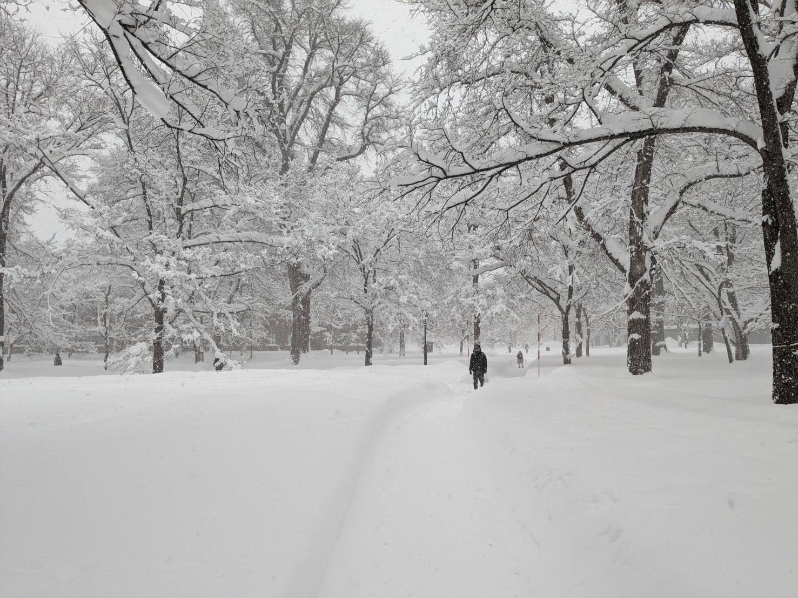

KOJIWADA'S
WEBSITE
My name is Koji Wada belong to Hokkaido university.
My research fields are the discrete dynamical system and discrete wave equation.
Thank you for visiting my website!!
[Last update : March 2, 2025]
My research fields are the discrete dynamical system and discrete wave equation.
Thank you for visiting my website!!
[Last update : March 2, 2025]
Activity History
- 2025.2.17
- The 26th Northeastern Symposium on Mathematical Analysisで発表しました.
- 2025.1.12
- Winter Annual Conference on Dynamical Systems 2024で発表しました.
- 2024.12.12
- Dynamics Days Sapporo 2024で発表しました.
- 2024.12.6
- 釧路高専 分野横断研究会を開催しました.
- 2024.9.15
- 日本応用数理学会2024年度年会で発表しました.
- 2024.9.12
- 日本神経回路学会第34回全国大会に参加しました.
- 2024.8.30
- CHAIN サマースクールに参加しました.
- 2024.5.13
- CHAIN新入生歓迎懇親会2024を開催しました.
- 2024.3.22
- 第4回高専間ネットワークによる微分方程式研究会に参加しました.
- 2024.3.4
- 第20回数学総合若手研究集会～数学の交叉点～に参加しました.
- 2024.1.21
- シンポジウム 自己の科学は可能かに参加しました．
- 2024.1.12
- CHAIN ウィンタースクールに参加しました．
- 2024.1.8
- 2023年度冬の力学系研究集会に参加しました．
- 2023.11.26
- 21世紀の複雑系 研究集会に参加しました．
- 2023.9.15
- 釧路鳥取神社例大祭に釧路鳥取傘踊り保存会として参加しました．
- 2023.8.30
- 第4回大同大学 若手 微分方程式セミナーに参加しました.
- 2023.8.25
- CHAIN サマースクールに参加しました.
- 2023.7.28
- 国際人工生命学会ALIFEに学生ボランティアとして参加しました.
- 2023.6.30
- 生理学研究会 第5回 力学系の視点からの脳・神経回路の理解に参加しました.
- 2023.6.30
- RIMS研究集会 力学系理論の展開と応用に参加しました.
- 2023.4.3
- 北海道大学大学院理学院数学専攻修士課程に入学しました.
- 2023.3.23
- 北海道大学理学部数学科を卒業しました．
- 2023.3.9
- 第19回数学総合若手研究集会～数学の交叉点～に参加しました.
- 2022.12.9
- 釧路高専 大学編入学説明会で講演しました.
- 2022.8.29
- WEBSITEを公開しました.